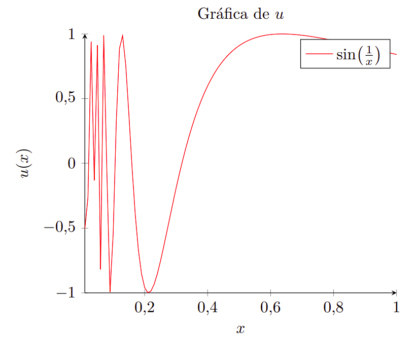
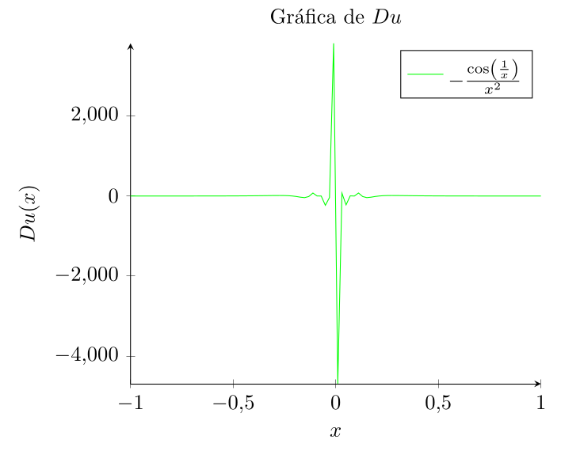

Derivada Débil
\[ \usepackage{amssymb} \usepackage{amsmath} \usepackage[dvipsnames]{xcolor} \def\R{{\mathbb{R}}} \def\Z{{\mathbb{Z}}} \renewcommand{\norm}[1]{\left\| #1 \right\|} \renewcommand{\abs}[1]{\left| #1 \right|} \def\sen{{\textrm{sen}}} \def\cos{{\textrm{cos}}} \]
Definición 2.1
Para \(\Omega \subset \mathbb{R}^n\), el conjunto
\[ C^{\infty}_{0}(\Omega) = \{ u \in C^{\infty}(\Omega) \mid \text{supp}(u) \subset V \subset\subset \Omega \} \]
es llamado el conjunto de funciones suaves de soporte compacto. Es más usado \(\mathcal{D}(\Omega)\) para denotar \(C^{\infty}_{0}(\Omega)\), y \(\mathcal{D}(\Omega)\) es llamada el espacio de las funciones de prueba.
Para \(u \in C^1(\mathbb{R})\), podemos definir \(\frac{du}{dx}\) por la fórmula de integración por partes como
\[ \int_{\mathbb{R}} \frac{du}{dx}(x) \phi(x) \, dx = -\int_{\mathbb{R}} u(x) \frac{d\phi}{dx}(x) \, dx, \quad \forall \phi \in C^{\infty}_{0}(\mathbb{R}). \]
Note que el lado derecho está bien definido siempre que \(u \in L^{1}_{\text{loc}}(\mathbb{R})\).
Note que la integral del lado derecho sería cero si estamos fuera del soporte de \(\phi\), entonces si tenemos \(\text{supp}(\phi) \subseteq [a,b]\)
\[ \begin{aligned} \int_{\mathbb{R}} u(x) \frac{d\phi}{dx}(x) \, dx &= \int_{a}^{b} u(x) \frac{d\phi}{dx}(x) \, dx \\ & \leq \left(\int_{a}^{b} |u(x)| \, dx\right) \norm{\frac{d\phi}{dx}}_{C^0} \quad \text{Desigualdad de Hölder con } p=1, q = \infty \\ % \, \text{ la norma de } C^0 \text{ es equivalente a la norma } \infty \\ & \leq \left(\int_{a}^{b} |u(x)| \, dx\right) \norm{\phi}_{C^{1}} \end{aligned} \]
Definición 2.2
Un elemento \(\alpha \in \Z_{+}^{n}\)(enteros no negativos) es llamado multi-índice. Para \(\alpha = (\alpha_1, \ldots, \alpha_n)\), escribimos \(D = \frac{\partial^{\alpha_1} }{\partial x_1^{\alpha_1}} \cdots \frac{\partial^{\alpha_n} }{\partial x_n^{\alpha_n}}\) y \(|\alpha| = \alpha_1 + \ldots + \alpha_n\).
Ejemplo 2.2
Sea \(n=2\). Si \(\abs{\alpha} = 0\), entonces \(\alpha = (0,0)\); si \(\abs{\alpha} = 1\), entonces \(\alpha = (1,0)\) o \(\alpha = (0,1)\). Si \(\abs{\alpha} = 2\), entonces \(\alpha = (1,1)\).
Definición 2.3
Suponga que \(u \in L^{1}_{\mathrm{loc}}(\Omega)\). Entonces \(v^{\alpha} \in L^{1}_{\mathrm{loc}}(\Omega)\) es llamada la \(\alpha^{th}\) derivada débil de (u), escrita como \(v^{\alpha} = D^{\alpha}u\), si
\[ \int_{\Omega} u(x) D^{\alpha} \phi(x) \, dx = (-1)^{|\alpha|} \int_{\Omega} v^{\alpha}(x) \phi(x) \, dx, \quad \forall \phi \in C^{\infty}_{0}(\Omega) \]
Ejemplo 2.3
Sea \(n=1\), y el conjunto \(\Omega = (0,2)\). Definamos la función
\[ u(x) = \begin{cases} x, & \quad 0 \leq x <1 \\ 1, & \quad 1 \leq x \leq 2 \end{cases} \]
Entonces la función
\[ v(x) = \begin{cases} 1, & \quad 0 \leq x <1 \\ 0, & \quad 1 \leq x \leq 2 \end{cases} \]
es la derivada débil de \(u\). Para ver esto, note que para \(\phi \in C_{0}^{\infty}(0,2)\)
\[ \begin{aligned} \int_0^2 u(x) \frac{d \phi}{d x}(x) \, d x & =\int_0^1 x \frac{d \phi}{d x}(x) \, d x+\int_1^2 \frac{d \phi}{d x}(x) \, dx \quad (\text{por linealidad de la integral}) \\ & =-\int_0^1 \phi(x) \, dx+\left.x \phi\right|_0^1+\left. \phi\right|_1^2 \quad (\text{TFC e integración por partes})\\ &= -\int_0^1 \phi(x) \, dx - \color{blue} \int_{1}^{2} 0\phi(x) \, dx\\ &=-\int_0^2 v(x) \phi(x) \, dx \end{aligned} \]
Ejemplo 2.4
Sea \(n=1\) y el conjunto \(\Omega=(0,2)\). Defina la función \[ u(x) =
\begin{cases}
x, \quad 0 \leq x <1 \\
2, \quad 1 \leq x \leq 2
\end{cases}
\] Entonces ¡la derivada débil no existe!
Para probarlo, asumamos por contradicción que existe \(v \in L_{\mathrm{loc}}^1(\Omega)\) tal que para todo \(\phi \in C_0^{\infty}(0,2)\), \[
\int_0^2 v(x) \phi(x) d x=-\int_0^2 u(x) \frac{d \phi}{d x}(x) d x .
\] Entonces \[\begin{align*}
\int_0^2 v(x) \phi(x) d x & =-\int_0^1 x \frac{d \phi}{d x}(x) dx-2 \int_1^2 \frac{d \phi}{d x}(x) dx \quad (\textit{linealidad de la integral}) \\
& =\int_0^1 \phi(x) d x-\phi(1)+2 \phi(1) \quad (\textit{ TFC e integración por partes}) \\
& =\int_0^1 \phi(x) d x+\phi(1) .
\end{align*}\] Suponga que \(\{\phi_j\}^{j =1}_{\infty}\) es una sucesión en \(C_0^{\infty}(0,2)\) tal que \[
0 \leq \phi_j \leq 1, \quad \phi_j(1)=1, \quad \phi_j(x) \rightarrow 0 \textit{ para } x \neq 1
\] Entonces \[
1 = \lim_{j \to \infty} \phi_j(1) = \lim_{j \to \infty} \left[ \int_0^2 v(x) \phi_j(x) d x-\int_0^1 \phi_j(x) dx \right]
\] Estudiemos los límites de las integrales por separado. Note que \(v(x) \phi_j(x) \stackrel{a.e.}{\longrightarrow} 0\) y haciendo \(g(x) = \abs{v(x)}\), \(\abs{v(x) \phi_j(x)} \leq g(x)\), luego por T.C.M. tenemos que \[
\lim_{j \to \infty} \int_0^2 v(x) \phi_j(x) dx = 0
\] Por otro lado, es claro que \(\abs{\phi_j} \leq 1\), entonces por T.C.M., tenemos que \[
\lim_{j \to \infty} \int_0^1 \phi_j(x) dx = 0
\] Así, \[
1 = \lim_{j \to \infty} \phi_j(1) = \lim_{j \to \infty} \left[ \int_0^2 v(x) \phi_j(x) d x-\int_0^1 \phi_j(x) dx \right] =0
\] lo cual es una contradicción, por tanto no existe la derivada débil para \(u\).
Definición 2.4
Para \(p \in[1, \infty]\), define \(W^{1, p}(\Omega)=\left\{u \in L^p(\Omega) \mid\right.\) la derivada débil existe,\(\, Du \in\) \(\left.L^p(\Omega)\right\}\), donde \(Du\) es la derivada débil de \(u\).
Ejemplo 2.5
Sea \(n=1\) y \(\Omega=(0,1)\). Definamos la función \(u(x)=\sin (1 / x)\). Entonces \(u \in L^1(0,1)\), ahora \[ \begin{align*} \int_{0}^{1} \sen(1/x) \phi^{\prime}(x) &= - \int_{0}^{1} v(x) \phi(x) dx \\ \sen(1/x)\phi(x) \lvert_{0}^{1} - \int_{0}^{1} (-\cos(1/x)/x^2) \phi(x) &= - \int_{0}^{1} v(x) \phi(x) dx \quad (\textit{ Integración por partes }) \end{align*} \] Por tanto, \(Du=-\cos (1 / x) / x^2 \in L_{\text {loc }}^1(0,1)\), pero \(u \notin W^{1, p}(\Omega)\) para cualquier \(p\).


Definición 2.5
En el caso \(p=2\), definimos \(H^1(\Omega)=W^{1, p}(\Omega)\)
Ejemplo 2.5
Sea \(\Omega=B(0,1) \subset \mathbb{R}^2\) y el conjunto \(u(x)=|x|^{-\alpha}\). Queremos determinar los valores de \(\alpha\) para los cuales \(u \in H^1(\Omega)\).
Dado que \(|x|^{-\alpha}=\left(\sum_{i=1}^2x_i x_i\right)^{-\alpha / 2}\), entonces \(\partial_{x_i}|x|^{-\alpha}=-\alpha|x|^{-\alpha-2} x_i\) está bien definida fuera de \(x=0\).
Mostramos que \(u \in L_{\text {loc }}^1(\Omega)\). Para ver esto, note que \(\int_{\Omega}|x|^{-\alpha} d x=\int_0^{2 \pi} \int_0^1 r^{-\alpha}rdrd \theta<\infty\) (teorema del cambio de variable) siempre que \(\alpha<2\).
Definamos el vector \(v(x)=-\alpha|x|^{-\alpha-2} x\) (de modo que cada componente viene dada por \(v_i(x)= -\alpha|x|^{-\alpha-2} x_i)\) Tenemos que probrar que \[
\int_{B(0,1)} u(x) D \phi(x) d x=-\int_{B(0,1)} v(x) \phi(x) d x \quad \forall \phi \in C_0^{\infty}(B(0,1)) .
\] Para ver esto, sea \(\Omega_\delta=B(0,1)-B(0, \delta)\), además \(n\) denota la normal unitaria a \(\partial \Omega_\delta\) (apuntando hacia el origen). La integración por partes da como resultado \[
\int_{\Omega_\delta}|x|^{-\alpha} D \phi(x) d x=\int_0^{2 \pi} \delta^{-\alpha} \phi(x) n(x) \delta d \theta+\alpha \int_{\Omega_\delta}|x|^{-\alpha-2} x \phi(x) d x .
\] Desde que \(\lim _{\delta \rightarrow 0} \delta^{1-\alpha} \int_0^{2 \pi} \phi(x) n(x) d \theta=0\) si \(\alpha<1\), vemos que \[
\lim _{\delta \rightarrow 0} \int_{\Omega_\delta}|x|^{-\alpha} D \phi(x) d x=\lim _{\delta \rightarrow 0} \alpha \int_{\Omega_\delta}|x|^{-\alpha-2} x \phi(x) d x
\] Dado que \(\int_0^{2 \pi} \int_0^1 r^{-\alpha-1} r d r d \theta<\infty\) si \(\alpha<1\), por el T.C.D tenemos que \(v\) es la derivada débil de \(u\).
Note que si la derivada débil existe, entonces es única. Para ver esto, suponga que \(v^{\alpha}\) y \(\tilde{v}^{\alpha} \in L^1_{\textit{loc}}(\Omega)\) tal que \[ \int_{\Omega} u(x) D^{\alpha} \phi(x)dx = (-1)^{\abs{\alpha}} \int_{\Omega} v^{\alpha}(x)\phi(x)dx = (-1)^{\abs{\alpha}} \int_{\Omega} \tilde{v}^{\alpha}(x)\phi(x)dx, \quad \forall \phi \in C^{\infty}_{0}(\Omega) \] Entonces \(\int_{\Omega}\left(v^{\alpha}-\tilde{v}^{\alpha}\right) \phi d x=0\) para todo \(\phi \in C_0^{\infty}(\Omega)\), y usando el teorema de la sección de preliminares tenemos que \(v^{\alpha}=\tilde{v}^{\alpha}\) a.e.